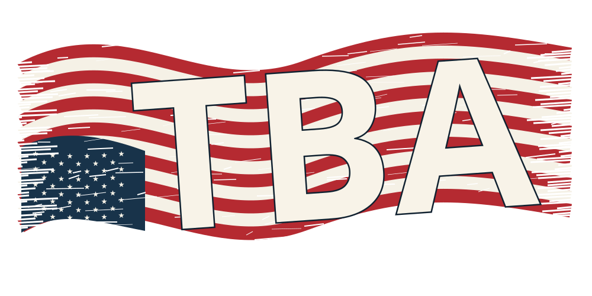
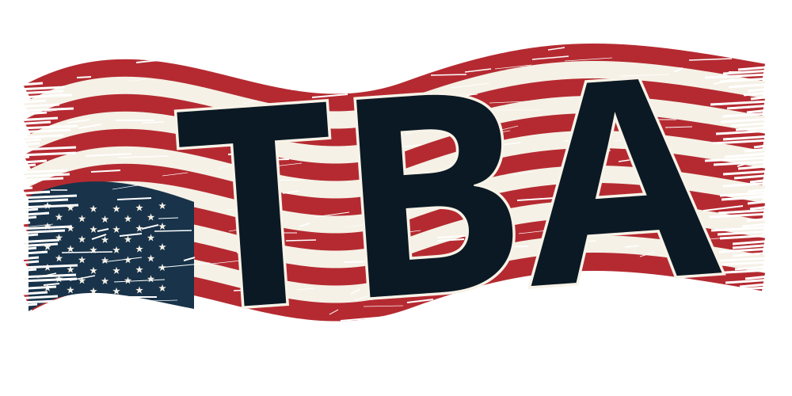
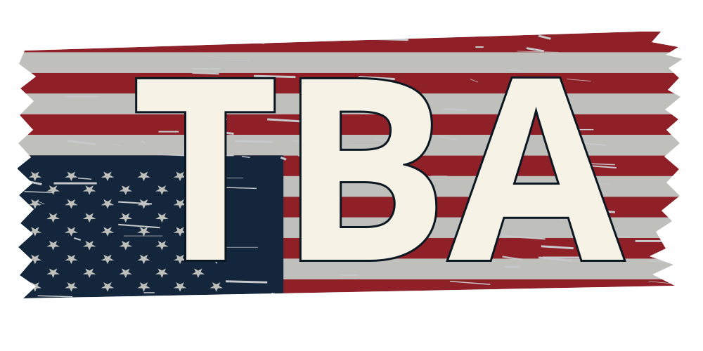
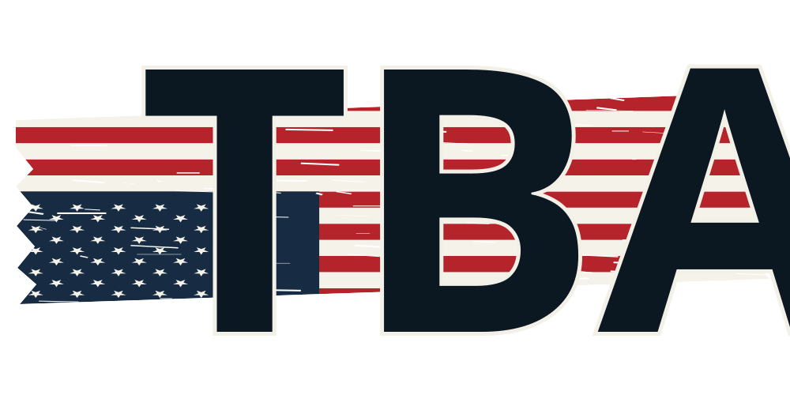
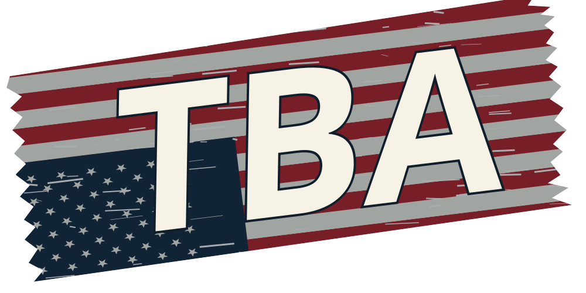
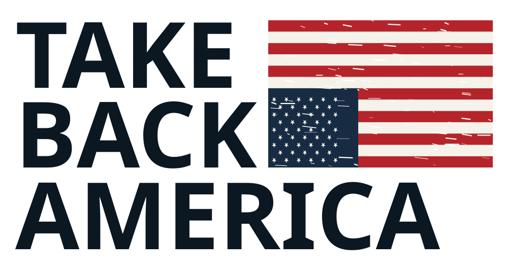
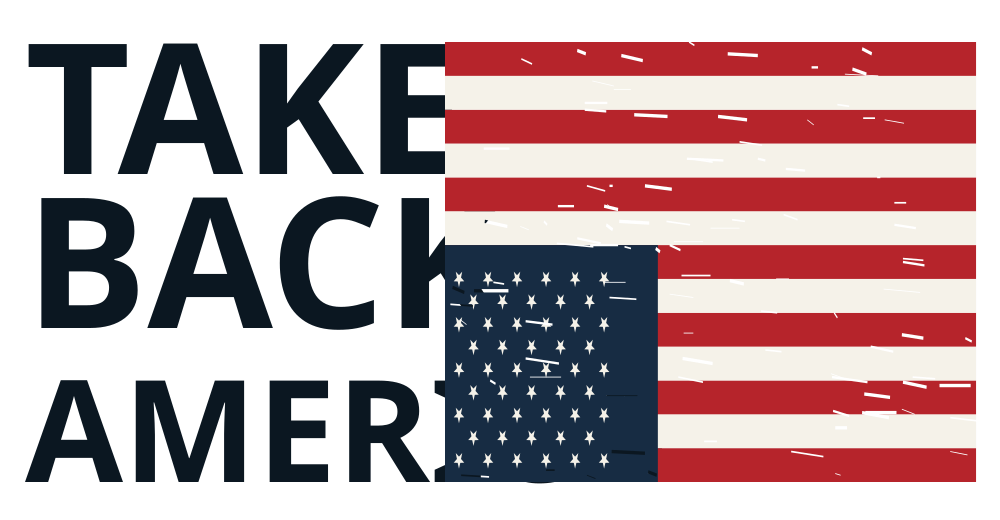
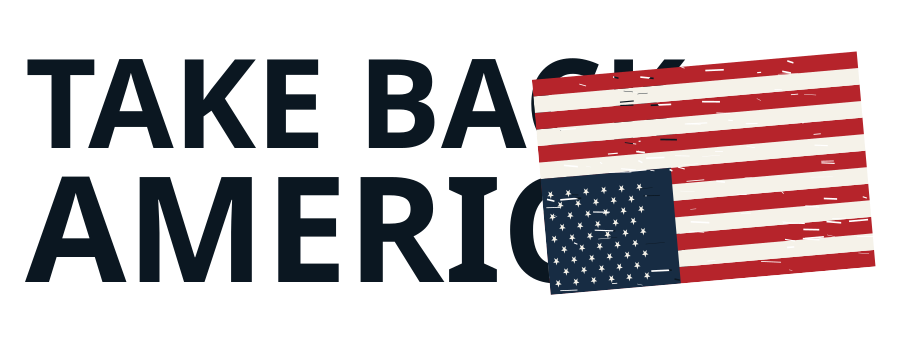
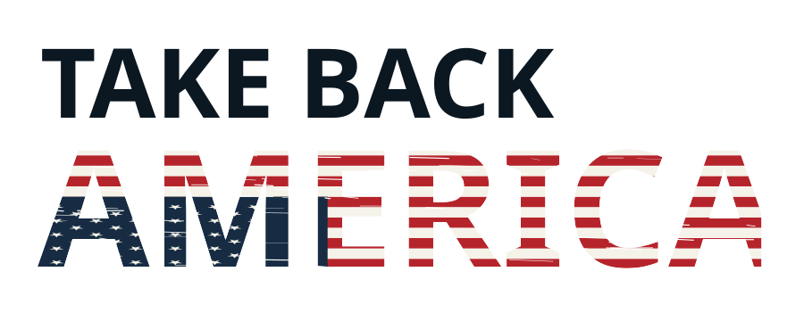
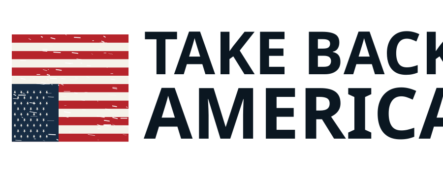

Take Back America / Identity study 01
TBA. Let the flag do more.
Wavy flag. Dry-brush edges. TBA in front.
Stars in the lower-left.
09 Wavy paintbrush banner
Your latest direction.

Small size
White initials over sweeping flag stripes with broken, dry-brush edges.Download SVG
{kind=link}
10 Wavy banner / dark initials
Your latest direction.

Small size
The same flowing flag, with ink-dark lettering for a heavier wordmark.Download SVG
{kind=link}
06 Full flag backdrop
TBA / Flag as the backdrop

Small size
Big white initials over the entire flag. The most direct and readable.Download SVG
{kind=link}
07 Breakout initials
TBA / Flag as the backdrop

Small size
Oversized letters rise above and below a torn flag band.Download SVG
{kind=link}
08 Angled banner
TBA / Flag as the backdrop

Small size
A forward-leaning wordmark with a rough, tilted flag behind it.Download SVG
{kind=link}
05 One integrated wordmark
Inspired by your reference’s compact layout.

Header size
The flag fills the upper-right space. AMERICA anchors the entire mark.Download SVG
{kind=link}
04 Stacked wordmark + full-height flag
Your latest direction.

Header size
Three stacked lines. Full-height flag on the right. Stars at the lower-left.Download SVG
{kind=link}
01 Flag extension
Closest to your reference.

Header size
The upside-down flag carries the distress; the name stays strong and clean.Download SVG
{kind=link}
02 Flag in the lettering
The most integrated treatment.

Header size
A statement mark for large placements. White stripes soften the letters at small sizes.Download SVG
{kind=link}
03 Flag emblem
A compact, traditional lockup.

Header size
The flag can also stand alone on an avatar, patch, or cap.Download SVG
{kind=link}